기계정비산업기사 (2008-03-02 기출문제)
1과목: 공유압 및 자동화시스템
1. 유압 모터 중 가장 간단하며 출력 토크가 일정하고 정, 역회전이 가능하며 토크 효율이 약 75 – 85%, 전 효율은 약 80% 정도이고 최저 회전 수는 150rpm으로 정밀 서보 기구에는 부적합한 모터는?
- 베인 모터
- 기어 모터
- 액시얼 피스톤 모터
- 레디얼 피스톤 모터
(정답률: 86%)

2. 제어신호가 입력된 후 일정한 시간이 경과된 다음에 작동되는 시간지연 밸브의 구성요소가 아닌 것은?
- 속도조절밸브
- 3/2way 밸브
- 압력증폭기
- 공기저장 탱크
(정답률: 80%)
3. 유압의 방향제어밸브 중 슬라이드 밸브 구조의 특징은?
- 밀봉이 우수하다
- 누유가 발생한다
- 이물질에 둔감하다
- 작동거리가 짧다
(정답률: 53%)
4. 공기 압축기에서 표준 대기압 상태의 공기를 시간당 10m씩 흡입한다. 이 공기를 700kpa로 압축하면 압축된 공기의 체적은 약 몇m인가? (단, 압축 시 온도의 변화는 무시한다)
- 0.43
- 1.25
- 2.43
- 3.25
(정답률: 54%)
5. 압축공기의 건조에 사용되는 흡착식 건조기에 대한 설명 중 올바른 것은?
- 외부에너지 공급이 필요하지 않다.
- 사용되는 건조제는 염화리튬 수용액, 폴리에틸렌 등이다.
- 일시적으로 사용한다.
- 물리적 방식을 사용하여 반영구적으로 사용할 수 있다.
(정답률: 76%)
6. 다음 중 유압 회로에 발생하는 서지(surge)압력을 흡수할 목적으로 사용되는 회로는?
- 블리드 오프 회로
- 압력 시퀀스 회로
- 어큐뮬레이터 회로
- 동조 회로
(정답률: 77%)
7. 어큐뮬레이터의 용도에 대한 설명으로 적합하지 않은 것은?
- 에너지 축적용
- 펌프 맥동 흡수용
- 압력 증대용
- 충격 압력의 완충용
(정답률: 79%)
8. 기능을 나타내는 기호와 용도가 옳게 연결된 것은?
- ▷ : 유압
- ▶ : 공압
- M : 스프링
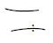
: 교축
(정답률: 80%)
9. 유압 펌프가 기름을 토출하지 못하고 있다. 점검항목이 아닌 것은?
- 오일 탱크에 규정량의 오일이 있는지 확인
- 흡입측 스트레이너 막힘상태
- 유압 오일의 점도
- 릴리프 밸브의 압력 설정
(정답률: 68%)
10. 회로의 일부에 배압을 발생시키고자 할 때 사용하는 밸브로써 한 방향의 흐름에 대해서는 설정된 배압을 부여하고 다른 방향의 흐름은 자유흐름을 행하는 밸브는?
- 브레이크 밸브
- 카운터밸런스 밸브
- 디플레이션 밸브
- 파일럿 릴리프 밸브
(정답률: 79%)
11. 단상 혹은 3상 전동기의 고장 중 전동기의 과열 원인과 거리가 먼 것은?
- 과부하
- 축조임의 과다
- 퓨즈의 단선
- 코일의 단락
(정답률: 67%)
12. FMS 형태의 기본 설계에서 시스템 형태 결정에 관계없는 것은?
- 제품의 종류
- 생산량
- 공정
- 필요공구
(정답률: 67%)
13. 설비 개선의 사고법에 대한 설명 중 틀린 것은?
- 복원이란 결함이 있는 현재의 상태를 원래의 바른 상태로 되돌리는 일이다.
- 미결함의 사고법은 결과에 대한 영향이 적다고 일반적으로 생각되는 것을 철저 하게 제거하는 사고를 뜻한다.
- 조정의 조절화의 사고법은 기계에 의한 정량화와 수치화를 통해 활용하는 것이 다.
- 기능의 사고법이란 모든 현상에 대하여 체득한 것을 근거로 바르게 또한 반사적 으로 행동할 수 있는 힘이며 장시간에 걸쳐 지속될 수 있는 능력을 말한다.
(정답률: 45%)
14. 기기간 접속보다 단지 액추에이터의 동작순서를 표시하는 것은?
- 논리도
- 래더 다이어그램
- 변위-단계선도
- 제어선도
(정답률: 76%)
15. 제한된 공간상에서 긴 행정거리가 요구되는 곳에서 사용하며 외부와 피스톤 사이 의 강한 자력에 의해 운동을 전달하므로 내∙외부의 실링 효과가 우수하고 비 접촉식 센서에 의해서 위치제어가 가능한 실린더는?
- 텔레스코프 실린더
- 케이블 실린더
- 로드레스 실린더
- 충격 실린더
(정답률: 43%)
16. 다음의 센서 시스템 구성에서 신호전달 순서가 현상으로부터 제어로 진행하는 과정이 맞는 것은?
- 신호전송요소- 신호처리요소 – 변환요소 – 정보출력요소
- 변환요소 – 신호전송요소 – 신호처리요소- 정보출력요소
- 신호처리요소 – 변환요소 – 신호전송요소 – 정보출력요소
- 신호처리요소 – 신호전송요소 – 변환요소 – 정보출력요소
(정답률: 64%)
17. 열전대의 특징이 아닌 것은?
- 제백 효과를 이용한다.
- 열저항을 측정하여 온도를 알 수 있다.
- 기준 접점에 대한 온도와 열기전력을 이용하여 온도를 측정한다.
- B형은 온도변화에 대한 열기전력이 매우 작다.
(정답률: 45%)
18. 다음 논리 기호와 진리값의 표현이 바르게 된 것은?
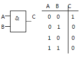
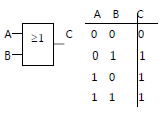
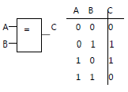
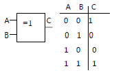
(정답률: 77%)
19. 시퀀스 제어계에서 위치 종속 시퀀스 제어계란 무엇인가?
- 순차적인 작업이 이전단계의 작업완료 여부를 확인하여 수행하는 제어시스템
- 순차적인 제어가 시간의 변화에 따라서 행해지는 제어시스템
- 프로그램벨트나 캠축을 모터로 회전시켜 일정한 시간이 경과되면 다음 작업이 행해 지도록 하는 시스템
- 실제의 시간과 관계없이 입력신호 변화에 의해서만 제어가 행해지는 시스템
(정답률: 75%)
20. 공압 기기에서 회전 실린더의 사업화된 회전 범위가 아닌것은?
- 45°
- 90°
- 180°
- 270°
(정답률: 67%)
2과목: 설비진단관리 및 기계정비
21. 보전자재관리의 경제성을 보증하는 시스템설계에서 기본적으로 고려해야 할 사항이 아닌 것은?
- 자재의 표준화
- 자재조달과 자재사용 자료를 정확히 파악
- 자재의 재고비용보다 자재품절로 인한 비용을 크게함
- 컴퓨터를 이용한 재고관리시스템에서는 자동시스템을 채용함
(정답률: 81%)
22. 부하시간에 관한 것은?
- 부하시간 + 무부하시간
- 조업시간 + 무부하시간
- 정미가동시간 + 정지시간
- 조업시간 + 정지시간
(정답률: 67%)
23. 다음 중 설명이 옳은 것은?
- 변위 측정 – 기어 및 베어링 진동 측정
- 가속도 측정 – 회전체의 불평형 및 구조진동 측정
- 속도 측정 – 전동기의 전기적 진동과 같이 2KHZ 이하의 진동 측정
- 절대위상 측정 – 설비의 결함원인 분석
(정답률: 55%)
24. 윤활유에 관한 설명 중 올바르지 않은 것은?
- 윤활유의 비중은 성능에는 관계없고 물과 비교한 무게 비이다.
- 절대점도는 동점도를 윤활유의 밀도로 나눈 값을 나타낸다.
- 윤활유의 온도를 낮추게 되면 유동성이 없어지고 응고되며 유동성을 잃기 직전의 온도를 유동점 이라고 한다.
- 점도는 윤활유의 기본이 되는 성질이며 점도의 단위로는 절대점도와 동점도를 사용한다.
(정답률: 65%)
25. 기계진동의 가장 일반적인 원인으로서 진동 특성이 1f 성분이 탁월한 회전기계의 열화 원인은? ( 단, f = 회전 주파수 )
- 미스얼라인먼트
- 언밸런스
- 기계적 풀림
- 공진
(정답률: 76%)
26. 설비보전의 효과로서 적합하지 않은 것은?
- 설비불량으로 인한 정지손실이 감소한다.
- 예비설비가 줄어들어 투자비용이 절감된다.
- 고장으로 인한 납기지연이 적어진다.
- 가동율이 향상되나 보전비가 증가한다.
(정답률: 74%)
27. 설비를 주기적으로 검사하여 유해한 성능저하 상태를 미리 발견하고 성능저하의 원인을 제거하거나 원상태로 복구시키는 보전은?
- 보전예방
- 개량보전
- 생산보전
- 예방보전
(정답률: 80%)
28. 다음 진폭을 나타내는 파라메터 중 거리로 측정하는 것은?
- 변위
- 속도
- 가속도
- 중력
(정답률: 69%)
29. 다음은 리차드 무더(Richard Muther)에 의한 총체적 공장 배치계획 절차이다. 배치계획 단계절차가 순서대로 된 것은?
- P-Q분석 – 흐름 – 활동상호관계분석 – 면적상호관계분석
- P-Q분석 – 면적상호관계분석 – 흐름 – 활동상호관계분석
- 흐름 – 활동상호관계분석 – P-Q분석 – 면적상호관계분석
- 흐름 – 활동상호관계분석 – 면적상호관계분석 – P-Q분석
(정답률: 67%)
30. 소음을 거의완전하게 투과시키는 유공판의 개공율과 효과적인 구멍의 크기 및 배치방법?
- 개공율 30%. 많은 작은 구멍을 균일하게 분포
- 개공율 50%, 많은 작은 구멍을 균일하게 분포
- 개공율 30%, 몇 개의 큰 구멍을 균일하게 분포
- 개공율 50%, 몇 개의 큰 구멍을 균일하게 분포
(정답률: 76%)
31. 정상적인 사람이 들을 수 있는 가청 음압의 변화범위는 얼마인가?
- 20uPa - 200Pa
- 11uPa – 15Pa
- 2uPa – 10Pa
- 0.1uPa – 1Pa
(정답률: 76%)
32. 다음은 만성 로스의 대책이다 거리가 먼 것은?
- 로스의 발생량을 정확하게 측정한다.
- 관리해야 할 요인 계를 철저히 검토한다.
- 현상 해석을 철저히 한다.
- 요인 중에 숨어 있는 결함을 표면으로 끌어낸다.
(정답률: 57%)
33. 설비진단기술을 이용한 결과로 볼 수 있는 것은?
- 인위적 고장 증가
- 돌발 고장 감소
- 정비 비용의 증가
- 점검 개소의 감소
(정답률: 70%)
34. 설비보전 표준 설정의 직접 기능에 속하지 않는 것은?
- 설비검사
- 설비정비
- 설비수리
- 설비교체
(정답률: 76%)
35. 윤활유의 첨가제가 갖추어야 할 일반적인 성질 중 거리가 먼 것은?
- 증발이 많아야 한다.
- 기유에 용해가 좋아야 한다.
- 유연성이 있어 다목적이어야 한다.
- 색상이 깨끗하여야 한다.
(정답률: 80%)
36. 설비의 정비계획 시에 주간보전계획의 6S 활동이 아닌 것은?
- 정리
- 의식화
- 분석
- 청소
(정답률: 64%)
37. 진동차단기로 이용되는 패드의 재료로써 적합하지 않은 것은 어느 것인가?
- 스폰지 고무
- 파이버 글라스
- 코르크
- 알루미늄합금
(정답률: 76%)
38. 설비관리 요원이 가져야 할 업무자세가 아닌 것은?
- 작업량의 변동이 크므로 최고부하를 없앤다.
- 다직종에 걸쳐 풍부한 경험과 기능을 필요로 한다.
- 긴급돌발을 없애고 작업자와 협력하는 자세를 가져야 한다.
- 광범위한 전문기술을 필요로 하므로 다수의 요원이 독자적인 전문기술을 가지고 협력해야 한다.
(정답률: 65%)
39. 다음 중 회전기계의 진동 측정방법 중 변위를 측정해야 하는 경우로 가장 적합한 것은?
- 회전축의 흔들림
- 캐비테이션 진동
- 베어링 흠 진동
- 기어의 흠 진동
(정답률: 68%)
40. 설비정비 표준을 결정할 때 기술적인 면에 속하는 것은?
- 규격 사양서
- 조직 규정
- 관리 규정
- 책임 한계
(정답률: 71%)
3과목: 공업계측 및 전기전자제어
41. 3상 교류회로의 각 상의 기전력과 전류의 크기가 같고 위상이 몇 ( °)일 때 대칭 3 상 교류라 하는가?
- 180°
- 360°
- 120°
- 90°
(정답률: 74%)
42. 다음 중 조작기기의 요소가 구비해야 할 조건으로 적절하지 않은 것은?
- 신뢰성이 높고 보수가 쉬울 것
- 요소에 가해지는 반력에 대하여 작동하는 조작력이 있을 것
- 동작범위,특성 및 크기가 적당할 것
- 움직이는 부분의 이력현상 (hysterisis)이 있고 반응 속도가 빠를 것
(정답률: 81%)
43. 다음 설명 중 옳지 않은 것은?
- 직류는 크기와 방향이 일정하다.
- 일반적으로 왜형파와 정현파는 같은 의미 이다.
- 일반적으로 교류라 함은 정현파를 의미 한다.
- 교류는 시간에 따라서 크기와 방향이 주기적으로 변화한다.
(정답률: 72%)
44. 다음 중 직류전동기의 속도 제어법에 속하지 않는 것은?
- 계자제어법
- 저항제어법
- 전압제어법
- 주파수제어법
(정답률: 70%)
45. 다음 중 논리회로의 불 대수식을 간략화 하는데 사용되는 규칙으로 옳지 않은 것은?
- A + 1 = 1
- A . A = A
- A + A = A
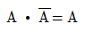
(정답률: 78%)
46. AC 200(V) 5(A)의 전열기를 7분간 사용했을 때 발생하는 열랑은 대략 몇 (Kcal)인가?
- 1Kcal
- 10Kcal
- 100Kcal
- 1000Kcal
(정답률: 57%)
47. 이득이 80dB 이면 전압 증폭비는?
- 102
- 104
- 103
- 10
(정답률: 59%)
48. 다음 중 극성을 가지는 콘덴서는?
- 전해 콘덴서
- 세라믹 콘덴서
- 마일러 콘덴서
- 마이카 콘덴서
(정답률: 73%)
49. 계측기가 미소한 측정량의 변화를 감지할 수 있는 최소 측정량의 크가를 무엇이라 하는가?
- 감도
- 분해능
- 과도 특성
- 정밀도
(정답률: 75%)
50. 제어 밸브는 프로세스의 요구에 따라 여러 종류의 형식이 있다. 다음 중 제어 밸브를 조작 신호와 밸브 시트의 형식에 따라 분류할 때 조작 신호에 따른 분류에 속하는 것은?
- 글로브밸브
- 격막밸브
- 게이트밸브
- 자력식밸브
(정답률: 63%)
51. 그림의 타임차트(TIME CHART)가 나타내는 접점 기호로 알맞은 것은?
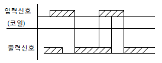
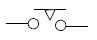
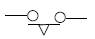
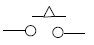
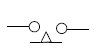
(정답률: 50%)
52. 다음의 회로도에서 입력 A=0, B=1일 때 출력 C, S로 알맞은 것은? (단. C:자리올림(Carry), S : 합(Sum))
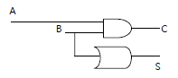
- C=0, S=0
- C=0, S=1
- C=1, S=0
- C=1, S=1
(정답률: 73%)
53. 다음 기호로 나타내는 것으로 알맞은 것은?
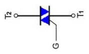
- 실리콘 제어 정류기(SCR)
- 다이액 (Diac)
- 트라이액(Triac)
- 실리콘양방향 스위치(SBS)
(정답률: 66%)
54. 도전성 유체의 유속 또는 유량측정에 가장 적합한 것은?
- 벤츄리 유량계
- 전자 유량계
- 오리피스 유량계
- 와류 유량계
(정답률: 69%)
55. 다음 중 각도 검출용 센서가 아닌 것은?
- 포텐쇼미터(Potentiometer)
- 싱크로 (Synchro)
- 로드 셀 (load cell)
- 레졸버 (Resolver)
(정답률: 74%)
56. 반도체의 성질을 설명한 것으로 옳지 않은 것은?
- 반도체는 온도가 상승하면 전기저항이 감소한다.
- 반도체에서 전기전도는 전자와 정공으로 이루어 진다.
- 반도체에 열이나 빛을 가하면 전기저항이 변한다.
- 반도체는 불순물이 증가하면 전기저항이 현저하게 증가한다.
(정답률: 62%)
57. 다음 중 공업량의 계측에 필요한 비접촉방식의 온도계는?
- 저항 온도계
- 열전 온도계
- 방사 온도계
- 서머스터 온도계
(정답률: 72%)
58. 적분 요소의 전달함수는?
- Ts
- 1/TS
- K/1+TS
- K
(정답률: 72%)
59. 그림과 같은 회로는 어떤 회로인가?(유사그림)
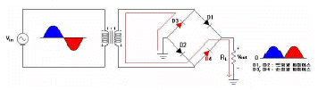
- 브리지형 (Bridge) 전파 정류회로
- 반파 정류회로
- 배전압 정류회로
- 전파 정류회로
(정답률: 76%)
60. 신호 변환기에서 변위를 전압으로 변환하는 장치는?
- 벨로즈
- 노즐,플래퍼
- 서미스터
- 차동 변압기
(정답률: 78%)
4과목: 기계정비 일반
61. 토출관이 짧은 저 양정 펌프 (전 양정 약 10m이하)에 사용되는 역류방지 밸브는?
- 게이트 밸브
- 푸트 밸브
- 플랩 밸브
- 슬루스 밸브
(정답률: 58%)
62. 회전축의 흔들림 점검, 공작물의 평행도 측정 및 표준과의 비교측정에 이용되는 측정 기기는?
- 스트레인 게이지
- 다이얼 게이지
- 서피스 게이지
- 게이지 블록
(정답률: 69%)
63. 체인을 걸 때 이음 링크를 관통시켜 임시 고정시키고 체인의 느슨한 측을 손으로 눌 러보고 조정해야 하는데 아래 그림에서 S-S 가 어느 정도 일 때 적당한가?
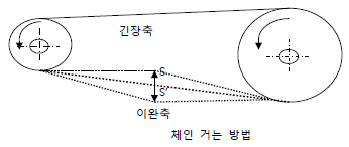
- 체인 폭의 1-2배
- 체인 폭의 2-4배
- 체인 피치의 1-2배
- 체인 피치의 2-4배
(정답률: 76%)
64. 다음 중 체크밸브의 종류가 아닌 것은?
- 스윙형 체크밸브
- 리프트형 체크밸브
- 솔리드 웨지 체크밸브
- 경사 디스크 체크밸브
(정답률: 55%)
65. 상온에서 유동적인 접착성 물질로 바른 후 일정시간 지난 후 건조되어 누설을 방지하 는 개스킷은?
- 고무 개스킷
- 석면 개스킷
- 접착 개스킷
- 액상 개스킷
(정답률: 75%)
66. 평행축형 감속기에 사용하지 않는 기어는?
- 스퍼 기어
- 헬리컬 기어
- 더블 헬리컬 기어
- 웜 기어
(정답률: 79%)
67. 전동기 사용시 베어링 부에서의 발열의 원인이 아닌 것은?
- 윤활 불량
- 베어링 조립불량
- 체인, 벨트 등이 지나치게 느슨함
- 커플링의 중심내기 불량이나 적정 틈새가 없음
(정답률: 73%)
68. 나사부의 녹에 의한 고착을 방지하기 위한 방법으로 잘못 된 것은?
- 산화연분을 기계유로 반죽하여 나사부에 칠한다.
- 나사부에 유성페인트를 칠한다.
- 나사부에 개스킷을 사용한다.
- 스테인리스강 등의 내식성 금속을 사용한다.
(정답률: 53%)
69. 축의 회전수가 1600rpm일 때 센터링 기준 값으로 적정한 것은?
- 원주간 방향 0.03mm, 면간차 0.01mm
- 원주간 방향 0.06mm, 면간차 0.03mm
- 원주간 방향 0.08mm, 면간차 0.⑤mm
- 원주간 방향 0.10mm, 면간차 0.08mm
(정답률: 68%)
70. 롤러 베어링을 축에 정착하는 방법으로 적당하지 않은 것은?
- 가열유조에 의한 방법
- 고주파 가열기에 의한 방법
- 프레스 압입에 의한 방법
- 펀치에 의한 타격 방법
(정답률: 73%)
71. 다음 중 펌프의 전 효율을 구하는 식으로 맞는 것은? ( 단, 전효율=η, 수력효율 =ηh, 기계효율=ηm, 체적효율=ηv )
- η = ηh
- η = ηh x ηm
- η= ηh x ηv
- η =ηh x ηm x ηv
(정답률: 72%)
72. 배관의 직선 연결 이음에 사용되지 않는 배관용 관 이음쇠는?
- 유니언
- 니플
- 플러그
- 부싱
(정답률: 42%)
73. 펌프의 흡입 양정이 높거나 흐름속도가 국부적으로 빠른 부분에서 압력 저하로 유체 가 증발하는 현상은?
- 서징 현상
- 수격 현상
- 캐비테이션 현상
- 압력상승 현상
(정답률: 62%)
74. 가열 끼워 맞춤에서 가열온도를 250c 이하로 하는 이유로 맞는 것은?
- 재질의 변화 및 변형을 방지하기 위하여
- 가열 작업시간 단축을 위하여
- 에너지 절감을 위하여
- 조립 후 급냉을 위하여
(정답률: 82%)
75. 공구 전체의 길이로 규격을 나타내지 않는 것은?
- 스톱 링 플라이어
- 멍키 스패너
- 롱 노즈 플라이어
- 조합 플라이어
(정답률: 42%)
76. 기어의 피치원 지름을 D(mm), 잇수를 Z 라고 할 때 모듈 M 은 어떻게 표시되는가?
- M = πZ/D
- M = Z/π D
- M = Z/D
- M = D/Z
(정답률: 56%)
77. 송풍기 사용압력으로 옳은 것은?
- 0 - 0.1 kgf/cm2
- 0.1 – 1.0 kgf/cm2
- 1.0 - 1.5 kgf/cm2
- 2 – 3 kgf/cm2
(정답률: 79%)
78. 원심식 압축기의 장점이 아닌 것은?
- 윤활이 쉽다.
- 고압 발생이 용이하다
- 압력 맥동이 없다.
- 대용량이다.
(정답률: 66%)
79. 축이 마모되어 수리할 때 보스에 부시를 넣어야 하는 경우는?
- 마모부분 다시 깍기
- 마모부에 금속 용사하기
- 마모부에 덧살 붙임 용접하기
- 마모부에 잘라 맞춰 용접하기
(정답률: 66%)
80. 원심형 통풍기 (fan)의 정기 검사항목이 아닌 것은?
- 흡기, 배기의 능력
- 통풍기의 주유상태
- 덕트의 마모상태
- 베어링의 진동상태
(정답률: 45%)